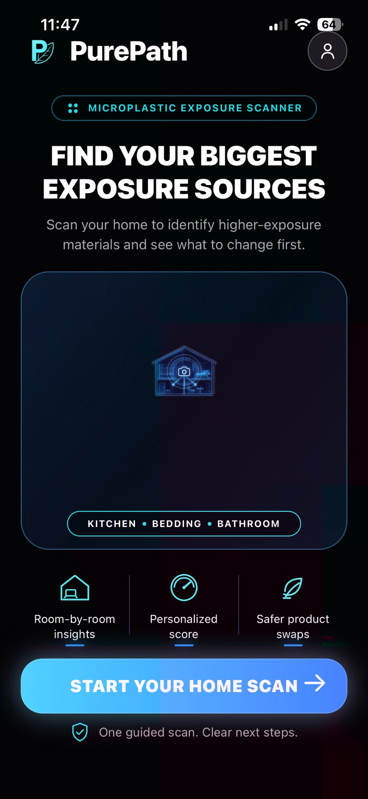
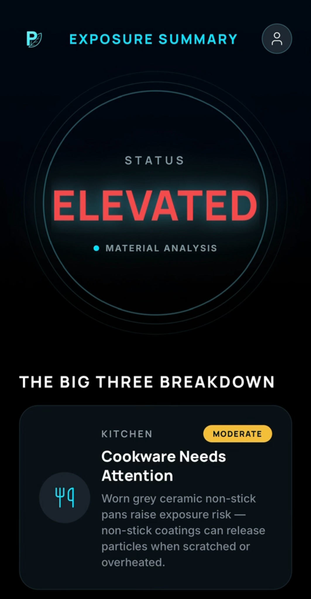

Science-informed
PurePath uses peer-reviewed research to help evaluate materials and conditions associated with microplastic exposure.
PurePath helps you identify potential microplastic exposure sources in your home and shows you what to change first.

PurePath uses peer-reviewed research to help evaluate materials and conditions associated with microplastic exposure.
Advanced AI identifies visible materials and wear patterns.
Get recommendations customized for your home.
Small wins, clear priorities. Start with what matters most.
Microplastics can come from everyday materials throughout the home. PurePath uses camera-based AI and science-informed analysis to help you understand which items may contribute most to potential exposure and what to change first.
PurePath analyzes visible materials, surface condition and wear to flag items that may contribute to potential microplastic exposure.
See the swaps and practical changes that can address your highest-priority exposure sources first.
Re-scan after making changes and compare your updated results to see how your home profile changes over time.
PurePath uses visual analysis and user-provided information to estimate relative exposure potential. It does not measure microplastics in the body or provide a medical diagnosis.
Take a guided indoor scan of key items in your kitchen, bedroom, and bathroom.
AI analyzes visible materials, surface condition and wear patterns associated with potential microplastic exposure.
See your exposure score, top exposure sources, and personalized steps to lower your exposure.

Quick view of your home’s overall exposure potential.
See the items contributing most to your estimated exposure.
Personalized product swaps that can help reduce the biggest exposure contributors.
Re-scan after making changes and compare your updated score.
PurePath scores estimate relative exposure potential based on detected materials, visible condition and user-provided information.
They do not measure microplastics in the body or provide a medical diagnosis.
Pre-launch only available to first 500 signups.